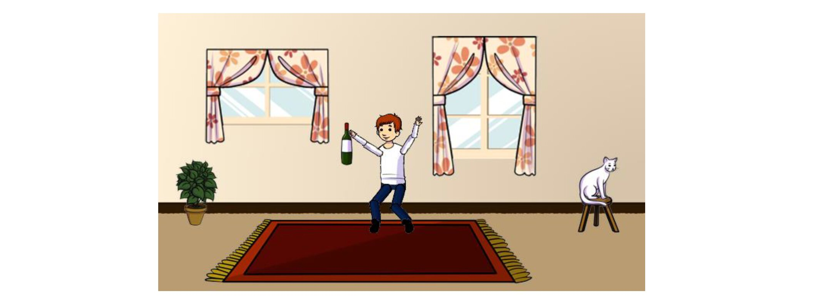

Our dataset
In such project, we use VQA 1.0 Abstract Scenes dataset http://visualqa.org/ download.html for training and evaluation. This dataset consists of abstract 20000 images. For each image, there are three questions and for each question, there are ten answers labeled by human annotators. There are 60,000 training questions and 30, 000 validation questions in the data set. Fig 1 is an example of the training image. The question is ’is the boy having a wine?’ and the answer is ’Yes’.
Visual Question Answering will be formulated as a 1000 class classification problem. We will train the classifier using the training 60,000 questions and answers. In testing, we use the 30,000 validation questions for testing. For the training set, we will select 1000 most frequent answer as the classification label. Each image is trained to predict the corresponding label.